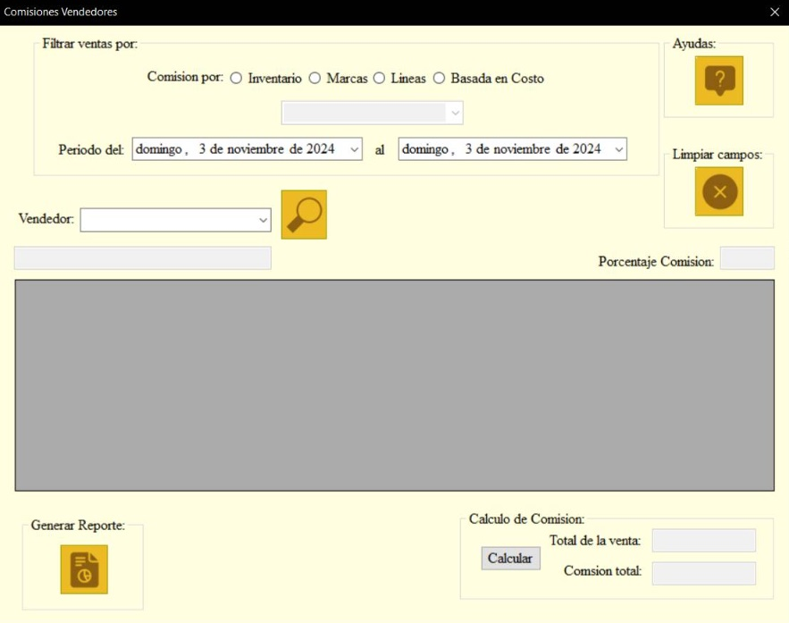
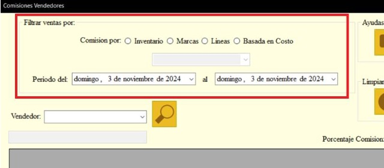
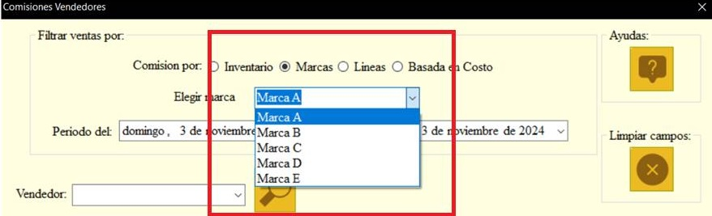
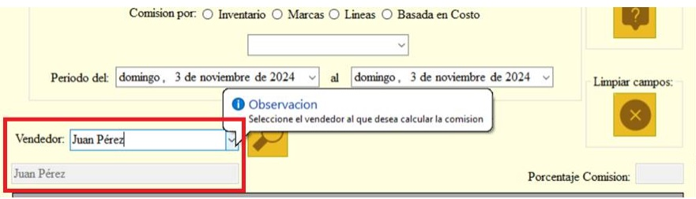
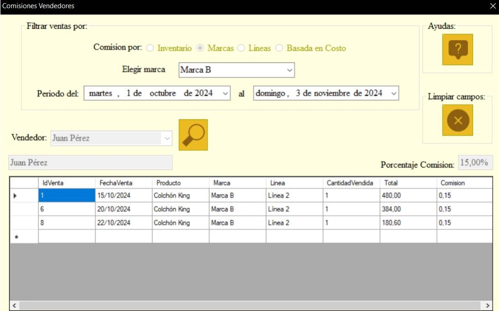
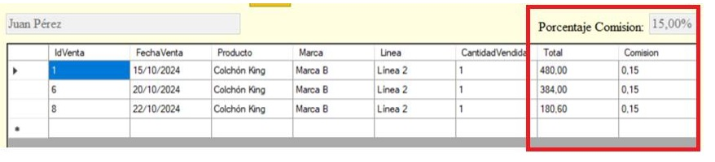
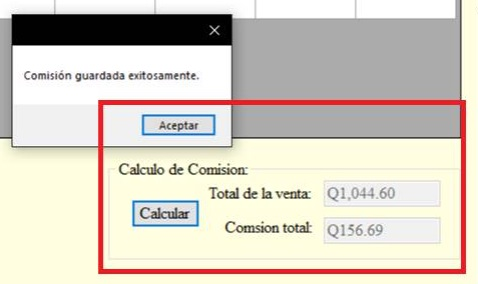
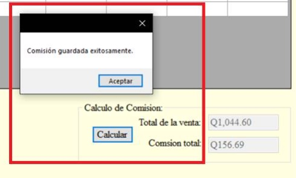
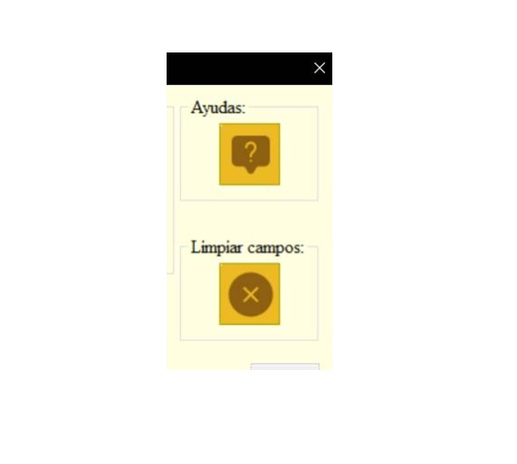
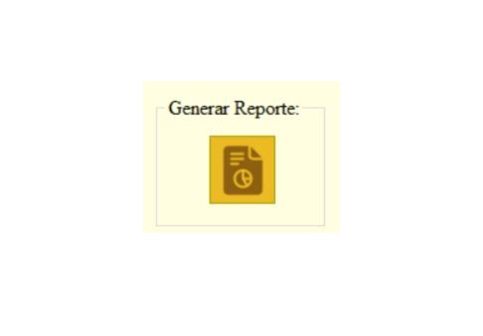

El formulario de cálculo de comisión es una herramienta diseñada para calcular la comisión total a pagar a un vendedor, según el tipo de filtro que se les aplique a las ventas relacionadas al mismo. La interfaz consta de los siguientes elementos:

- Filtrar ventas por: Este es un grupo de opciones que establece cuales serán las ventas que serán mostradas en el apartado gris del formulario, se deben elegir obligatoriamente un tipo de filtro entre las 4 opciones (Inventario, Marcas, Líneas y Basada en costo) además también debe seleccionarse un periodo de fechas en las que se necesitan mostrar dichas ventas:

- Comisión por (Ventas y Líneas): Un campo desplegable (Combo Box) que permite escoger el mes en el que se desean revisar las horas adicionales.

- Vendedor: Esta lista desplegable muestra todos los vendedores existentes, esta selección es necesaria para poder mostrar solo las ventas que ha hecho el mismo y poder calcular su comisión en base a los filtros seleccionados. Una vez se ha seleccionado al vendedor, el nombre de quien haya sido seleccionado se mostrará en el recuadro ubicado justo debajo de la lista desplegable.

- Botón Búsqueda: Este botón solo podrá ser utilizado cuando se haya seleccionado los filtros de “comisión por”, el periodo de fechas a buscar y el nombre del vendedor. Una vez esta condición haya sido cumplida las ventas que cumplan con ese filtro y vendedor serán mostradas en la tabla que se encuentra en el recuadro gris del formulario, a la vez bloqueado la posibilidad de cambiar de filtro y cambiar de vendedor, pero mantiene la lista desplegable de Marcas o Líneas según corresponda y los filtros de fecha por si se requiere cambiar la búsqueda con respecto a esos filtros, pero si se requiere cambiar otro tipo de filtro o vendedor se debe hacer uso del botón Limpiar, en el apartado de Limpiar Campos:

- Apartado Porcentaje Comisión: En este recuadro se mostrará el porcentaje correspondiente al tipo de filtro, pero además en la tabla se mostrarán los porcentajes, en caso cada Marca o Linea tengan un porcentaje distinto.

- Cálculo de Comisión: En este apartado se muestran dos campos, el primero llamado “Total de la venta” que muestra la suma total de las ventas desplegadas en la tabla y el segundo “Comisión total”. El cálculo total de lo que se le pagara al vendedor por el concepto de su Comisión el cual se desplegara después de haber sido utilizado el Boton Calcular.

- Botón Calcular: Este botón se encarga de hacer el cálculo de la comisión total que se le pagara al vendedor, además de guardar la información en la respectiva base de datos.

- Botones de utilidad:
- Botón Ayudas: Este botón despliega el documento actual.
- Botón Limpiar campos: Este botón cancela todas las selecciones que se hayan hecho en el formulario y limpia los campos de este formulario.

- Botón Reporte: Abre el reporte que muestra los cálculos guardados.
